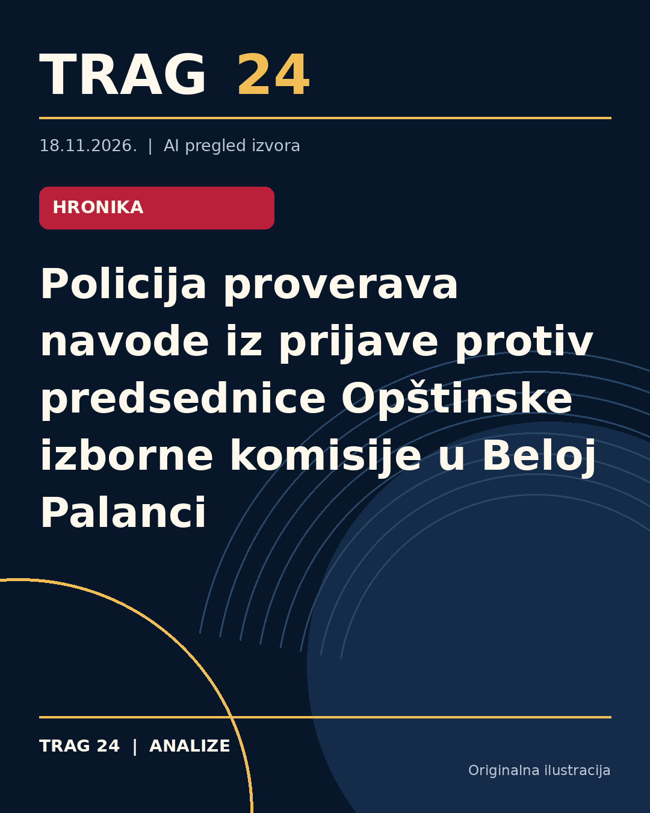

Policija proverava navode iz prijave protiv predsednice Opštinske izborne komisije u Beloj Palanci

ŠTA SE DOGODILO
Više javno tužilaštvo u Nišu, Posebno odeljenje za suzbijanje korupcije, naložilo je Upravi kriminalističke policije da prikupi potrebna obaveštenja radi provere krivične prijave podnete protiv M.K., predsednice Opštinske izborne komisije u Beloj Palanci. Prijava sadrži sumnju da je M.K. zloupotrebila svoj položaj i ovlašćenja kako bi omogućila da komisija postupa u sastavu koji nije u skladu sa zakonskim propisima.
HRONOLOGIJA
Krivična prijava podneta je 23. oktobra 2026. godine od strane M.V. iz Bele Palanke. Osnovno javno tužilaštvo u Pirotu dostavilo je prijavu Višem javnom tužilaštvu u Nišu 27. oktobra iste godine, koje je potom zadužilo Upravu kriminalističke policije za prikupljanje potrebnih podataka. Više javno tužilaštvo će nakon prikupljanja obaveštenja doneti odluku o daljim koracima.
ŠTA NAVODE IZVORI
Iz Višeg javnog tužilaštva u Nišu potvrđeno je da se sumnja odnosi na mogućnost zloupotrebe službenog položaja u kontekstu postupanja komisije u sastavu koji nije saglasan sa zakonom. Izvori navode da će se na osnovu prikupljenih obaveštenja ocenjivati da li postoje elementi krivičnog dela. Izvorne informacije su dostupne na portalu Insajder, kao i na vestima portala Nova.rs i Danas, koji prenose zvanično saopštenje tužilaštva bez dodatnih komentara ili dokaza.
ŠTA JE POTVRĐENO
Potvrđeno je da Više javno tužilaštvo u Nišu, Posebno odeljenje za suzbijanje korupcije, istražuje prijavu podnetu protiv predsednice Opštinske izborne komisije. Postoji formalna istraga i angažovanje Uprave kriminalističke policije za prikupljanje obaveštenja. Takođe je potvrđeno da prijava sadrži navode o navodnoj zloupotrebi službenog položaja u vezi sa zakonskim propisima o sastavu komisije.
ŠTA NIJE POTVRĐENO
Do sada nije potvrđeno da je predsednica Opštinske izborne komisije počinila bilo kakvo krivično delo, niti su objavljeni detalji o konkretnim radnjama ili posledicama navodne zloupotrebe. Takođe nije poznato kada će biti završena istraga ili da li će biti podignuta optužnica.
ŠTA OSTАJE OTVORENO: Ostaje nepoznato kako će se dalje odvijati pravni postupak i da li će postojeća istraga rezultirati pravnim sankcijama. Takođe nije poznato kako će ova situacija uticati na rad Opštinske izborne komisije u Beloj Palanci i na lokalne izbore ili druge događaje koje komisija sprovodi. Javnost ne zna detalje prijave i stavove drugih uključenih strana.
Izvori
- https://insajder.net/prenosimo/bela-palanka-policija-proverava-navode-iz-prijave-protiv-predsednice-opstinske-izborne-komisije-saopstilo-tuzilastvo
- https://nova.rs/vesti/hronika/policija-proverava-navode-iz-prijave-protiv-predsednice-opstinske-izborne-komisije/
- https://www.danas.rs/vesti/drustvo/bela-palanka-policija-proverava-navode-iz-prijave-protiv-predsednice-opstinske-izborne-komisije/
Ova analiza je pripremljena uz pomoć veštačke inteligencije na osnovu javno dostupnih izvora. Navodi izvora nisu nužno nezavisno potvrđeni.